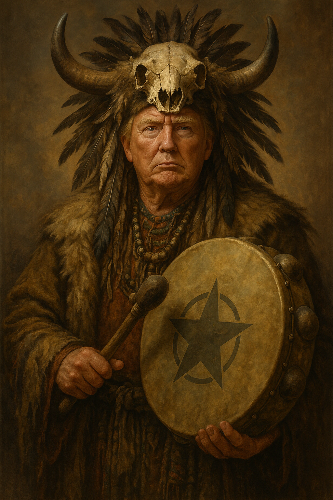

Contact Information |
 |
| Email: chiefshaman@trumpmagic.org | |
| ebsite: www.trumpshaman.com | |
| Location: Igloo Tower, Somewhere in Alaska |
Visionary, spellcaster, and self-proclaimed master of the mystic arts. Seeking to assume the sacred role of Chief Shaman of Alaska to guide the spirits of the North with unmatched confidence and a dash of golden flair.
| Years | Position | Achievements |
|---|---|---|
| 2017 - Present | Supreme Oracle of Mar-a-Lago |
|
| 2004 - 2015 | Host - "The Apprentice: Mystic Edition" |
|
Wharton School of Witchcraft and Wizardry
Bachelor of Mystical Economics, 1968